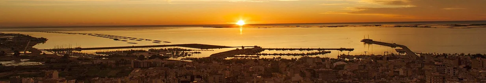

My personal journey

I was born in Sant Carles de la RÃ pita, a Mediterranean
city in the south of Catalonia where I grew up, which is
now simply called La RÃ pita.
La RÃ pita
is a municipality in the
MontsiÃ
region, located to the south of the
Natural Park of Delta de l'Ebre, with a strong maritime tradition, rich in agricultural
crops and in recent decades has positioned itself
as a true paradise
among tourist destinations, one of the jewels of the
Terres de l'Ebre
where you can enjoy of rich and varied gastronomy combined
with a wide range of activities in nature and cultural
events throughout the year.
The geographic enclave of
the municipality between sea, river, sky and mountains
feeds us a wide variety of ecosystems giving us a sweet,
warm and very healthy climate.
As a Mediterranean
city, its inhabitants are open to all cultures, they are
hospitable and hardworking, with a great resilience
developed by their community solidarity.
My parents,
born and members of this friendly community, were engaged
in agriculture and poultry farming, my sister was a teacher
and my brother an industrial master, and my first vocation
was to be an Electronic Engineer.

At the end of my basic general education I completed the
first part of my formation in electricity and electronics
at the Polytechnic Institute of Professional Training in
Tortosa, with the pride of being the only one and the first
to complete the studies with all approved subjects.
I
continued the second part of my studies until the 4th year
at the Comte de Rius Institute in Tarragona, taking
advantage of the summers in seasonal works, until I
suffered a serious traffic accident.
The accident was very serious and almost fatal with serious
physical consequences, which put me out of action for a
good 3 years and truncated my career and my adolescence.
In
any case, I can feel lucky to keep my left arm that
was torn off, and thanks to the evolution of medicine I
have it moderately operative.

My first professional conversion :
I used the season of my recovery therapy to do an
administrative assistant course with accounting techniques
and office practice at the Cots Academy in Tortosa,
strengthening my languages.
Then my passion for the digital world was born.
For a while I went to a relative's office to
help with billing and administration. It was the first time
I worked with a computer, an
PC IBM 286 with 2Mb of RAM running under
MS-DOS.
Do you know it, or do you remember ? ...
If you keep
reading I will refresh your memory.

In my spare moments I started to teach myself how to
program small applications with this language.
The
advertisements of that time offered the first
microcomputers for personal use at affordable prices (Spectrum, Amstrad, Commodore, MSX, ...).
For Christmas I was given a Sony MSX that connected
to the TV, and it worked with code cartridges or a tape
recorder to load or save the code.
A job opportunity knocked on my door, with administrative
work in media research for a commercial advertising
company.
It didn't last long, about 7 or 8 months.
After, I
teamed up with a colleague from this job creating a company
to offer various advertising services "Publicitat Vázquez-Torta, CB".
We offer: creation of logos, posters, writing and
contracting of spaces in radios, magazines and outdoor
advertising banners, advertising objects, print
reproductions, signage, decoration of commercial facades,
etc.
In the beginning we did everything by hand, with a drawing
table, a typewriter and a telephone.
A professional
computer was unthinkable due to the high prices and poor
performance.
This team adventure lasted us about 3 years and was a
good school for learning.

The property community dissolved and within a few months I
set up as a freelancer offering visual graphic design and
printing services.
In this new adventure, I acquired my first professional
computer, a PC AT-386 with 16 MB of RAM running by
Windows 3.1, and an A4 laser printer at 300 dpi,
which when called by hardware outputted a resolution of
1200 dpi.
The labor saving was impressive, especially in the making
of the original clichés.

The first big revolution was the appearance of
Windows 3.11 which had features for connecting
computers to a network. That time was very exciting,
technology was gaining momentum with the appearance of the
internet, the first Pentium at 66 Mhz, modems at
9600 bps, high capacity backup recorders
(100Mb). The incredible possibility to chat with the
whole world, with the
mIRC
Internet Relay Chat Client, and its
IRcap
script
Phew !!! 😲😵,... those speeds make you dizzy, don't
they ?
I latched onto this whole technological wave passionately in a self-taught way, evolving at the same pace as graphic design tools, hardware and the internet. I worked a few more years as a freelancer...

My intellectual curiosity led me to enroll in the
"ESARDI" School of Art and Design
in Amposta, where I was able to develop my artistic skills
applied to graphic design. I would like to thank my mentor
Antonia Ripoll, teacher of drawing and painting and
director of the center at the time, who knew how to awaken
my learning motivations.
Then, at the same time as my freelance work and training, I
worked in Amposta, as a graphic designer; first in a
company manufacturing flexographic plates
"Nou Disseny Clixés i Motllos, SA."; and later I worked in Flexoservei, SL. as
a graphic designer, final arts controller and manager of a
team of about 6/7 people, in another cardboard packaging
manufacturing company DAPSA where I learned a
lot about drafting and applying specific procedures of
industrial work, creating relationships and solutions for
the different productive sections of the company.
My
responsibility here grew exponentially, with excessive
workloads of between 10 and 14 hours per day.
I
waited for the end of my contract doing an introspective
reflection on personal and work reconciliation.
A new cycle of life was opening before me !
My second professional conversion :
After my accident, the doctors informed me that many of the
physical activities and sports I practiced would be
impossible.
I was a young man; restless and, why not say, a bit
stubborn, who needed to know and position my limits wanting
to strengthen self-confidence.
Despite the medical prognosis, I had developed the hobby
and the inventiveness to practice a sport that in theory I
should not have been able to practice: windsurfing. It was
an innovative sport that was growing in strength at the
time, which conveyed feelings of freedom and adrenaline.
With fortune materials I created different ways to be able
to hold the boom and raise the sail and little by little I
added muscle mass to the affected arm.
This sports hobby put me in contact with people in this discipline and other sailing sports. This is where my volunteering season began.